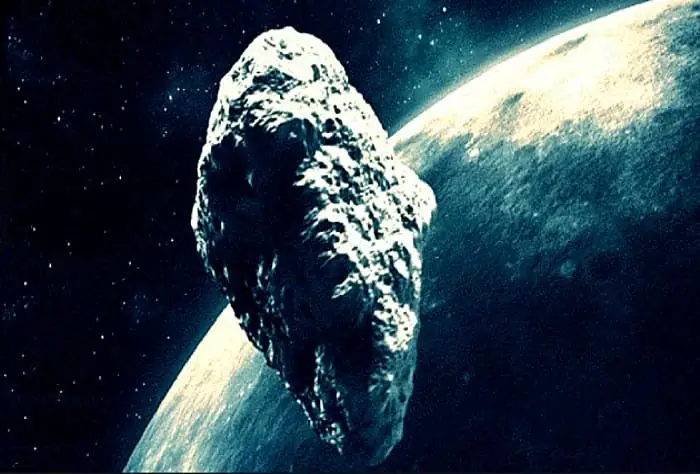

أخبار علمية ·
“كويكب ” ضخم سيعبر بسلام قرب الأرض.. 25 مايو
إعداد: م. ماجد أبو زاهرة

يستعد الراصدون للسماء لمراقبة عبور الكويكب المزدوج (1999 KW4) قرب الكرة الأرضية حيث سيقع في أقرب نقطة من الأرض يوم السبت 25 مايو 2019 عند الساعة 2:05 بعد منتصف الليل بتوقيت السعودية (11:05 مساء بتوقيت غرينتش) على مسافة آمنة تبلغ 5,182,015 كيلومترًا أو حوالي 13.5 ضعف المسافة بين الأرض والقمر، ما يعني أنه لا يوجد خطر لاصطدامه بنا، وستكون فرصة لمراقبة تلك الصخرة الفضائية الضخمة.
الكويكب (1999 KW4) عبارة عن نظام ثنائي يضم صخرة رئيسية عرضها حوالي 1.5 كيلومتر في حين أن الصخرة الأخرى المرافقة بعرض (0.5 كيلومتر) تسمى “تابع” أو “قمر” أو “كويكب ثانوي” يدور حول الكويكب الرئيسي.
الكويكب يتحرك بسرعة عالية تبلغ 77,446 كيلومترًا في الساعة بالنسبة للأرض، هذه السرعة إلى جانب حجمه سوف تسمح للراصدين بمشاهدته وهو يتحرك أمام النجوم، علما بأن هذا الكويكب لن يكون مشاهدا بالعين المجردة، ولكن يمكن رؤيته بسهولة من خلال تلسكوبات ذات أقطار تبدأ من 8 بوصات أو أكبر حيث سيصل لمعانه الظاهري عند اقترابه (+12) ما يعني أنه خافت جدا.
ولعل أفضل تقنية لتحديد موقع الكويكب هو توجيه التلسكوب الإلكتروني إلى نجم معروف بأنه سيقع في مسار ذلك الكويكب وانتظار ظهور الكويكب حيث سيبدو مثل نقطة ضوئية بطيئة الحركة للغاية بالنسبة للراصد.
ومن المقرر القيام بأرصاد رادارية للكويكب من مرصد (أريسيبو) في بورتوريكو في الفترة من 29 مايو إلى 7 يونيو، وسوف يدرس أيضا باستخدام رادار (غولد ستون) التابع لوكالة الفضاء ناسا في الفترة من 26 إلى 31 مايو.
ولعل أبرز ما يثير الاهتمام حول الكويكب (1999 KW4) هو شكله المفلطح مع سلسلة من التلال الاستوائية، على غرار الكويكب (بينو) والكويكب (ريوغو)، وتشير الأرصاد التلسكوبية إلى أن الكويكب الثانوي أو (قمر الكويكب) يدور حول الكويكب الرئيسي كل 16 ساعة من على مسافة 2.6 كيلومتر.
تم اكتشاف الكويكب (1999 KW4) من خلال منظومة (لاينر) لمسح السماء في نيومكسيكو عام 1999 وتم تصنيفه كجسم قريب من الأرض ووضع على قائمة الأجسام محتملة الخطورة “كإجراء احترازي روتيني”، إلا أن هذه الصخرة معروف مدارها ولا تشكل أي خطر على الأرض.
وبعد اقتراب الكويكب (1999 KW4) من الأرض في 25 مايو 2019 لن يقترب من الأرض كويكب بنفس حجمه أو أكبر من هذه الصخرة الفضائية حتى العام 2027.
ففي السادس من يونيو عام 2027 فإن الكويكب 4953 (1990 MU) البالغ عرضه ما بين 4 و9 كيلومترات سوف يعبر بأمان قرب الأرض من على مسافة تعادل 12 مرة المسافة التي تفصلنا عن القمر.
جدير بالذكر بأن الكويكب (1999 KW4) سوف يقترب من جديد من كوكبنا في 25 مايو 2036.